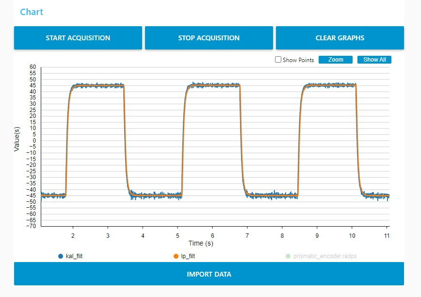
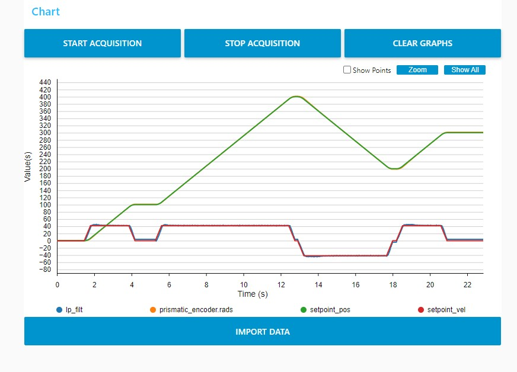
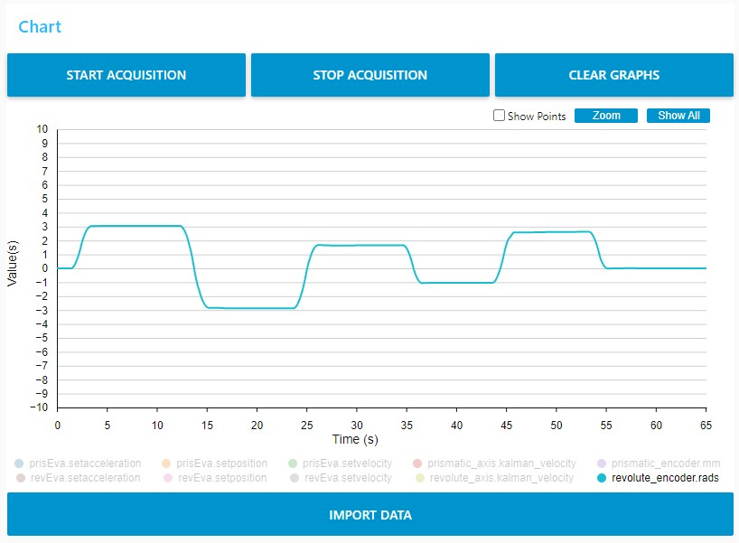
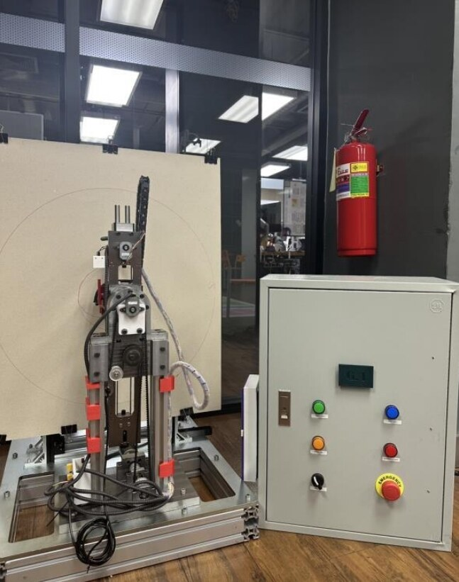
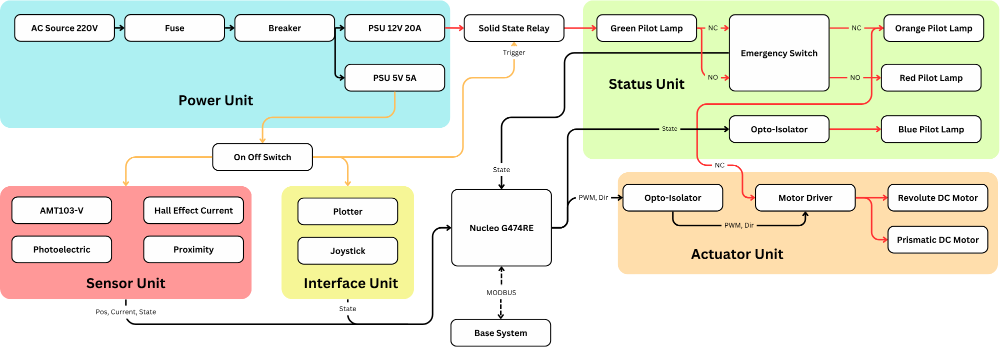
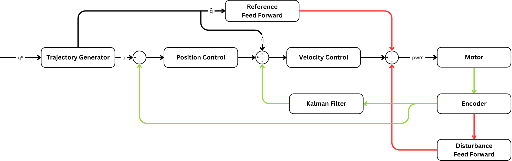
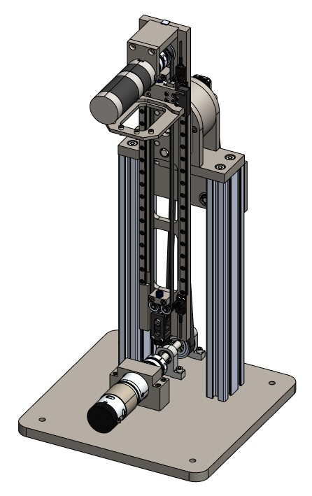
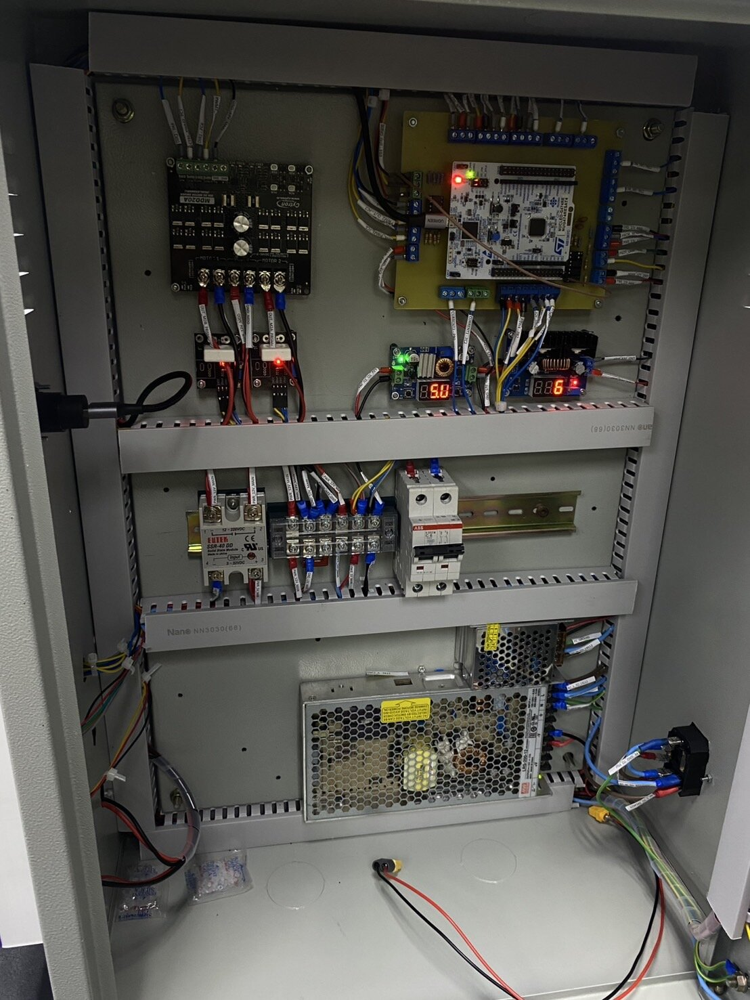

Overview
A studio project from FRA262 Robotics Studio 3 (Industrial Automation), done by a team of six students. The course gave a design brief from a company acting as the client. The brief asked for a 2-DOF vertical plotter arm with one revolute and one prismatic joint that draws letters and patterns with a plotter head and reports to the client base system over MODBUS in real time.
The arm had to carry a plotter head of up to 500 g inside \(300 \times 300 \times 1{,}000\) mm and use brushed DC motors only. The project applied the microcontroller, robot structure design and control courses to design, build and test an arm that meets the brief, and to write the engineering report.
The finished arm measures \(300 \times 270 \times 800\) mm without the control cabinet and plotter. Each joint runs cascaded position and velocity loops on an STM32 Nucleo G474RE.
My part was to lead the electrical system, with my teammates helping, to do all of the control, and to help assemble the hardware.
Hardware
| Controller | ST Nucleo G474RE with an STM32G474RE chip |
|---|---|
| Motors | Two 12 V ZGX45RGG brushed DC gearmotors, 400 RPM on the prismatic joint and 150 RPM on the revolute joint |
| Motor Driver | Cytron MDD20A, 2 channels, 20 A continuous |
| Encoders | Two AMT103-V Incremental Encoders |
| Homing | Two FC-33 photoelectric modules on the prismatic axis, one PR12-2DN proximity sensor on the revolute axis |
| Power | 220 V AC to a 12 V 20 A supply for the motors and a 5 V 5 A supply for logic and sensors |
| Protection | Fuse, breaker, solid state relay and an emergency button that cuts motor power but not the controller |
| Drive | Belt drives on both joints, a linear rail on the prismatic axis, and a counterweight on the revolute axis |
| Structure | 40 by 40 mm aluminium profile with steel plates and shafts |
System
| Controller | STM32 Nucleo G474RE, one board for both joints |
|---|---|
| Control Rate | Inner velocity loop at 1,000 Hz, outer position loop at 100 Hz |
| Software | STM32CubeIDE, MATLAB Simulink with Simscape Multibody, SolidWorks |
| Communication | MODBUS RTU slave on USART2, with the base system as master |
| Operating Modes | Point mode from the base system GUI, and joystick jog mode |
Process
Set the requirements
The brief fixed the mechanical, performance and electrical requirements, and the team checked each one at the end.
Size the motors and shafts
Hand calculations set the minimum torque and speed for a 1 kg load, and the ZGX45RGG gearmotor met them. A shaft equation and bearing life checks sized the shafts and bearings.
Design the mechanics
A belt-driven revolute axis with a counterweight and a belt-driven prismatic axis on a linear rail. Finite element analysis checked the base plate and the structure.
Build the electrical system
I led the electrical work, with my teammates helping, and I helped assemble the hardware.
- 220 V AC through a fuse, a breaker and a solid state relay to the 12 V and 5 V supplies.
- An emergency button that cuts motor power but leaves the controller on, and four pilot lamps.
- Custom boards for the Nucleo, the joystick and the sensors, connected to the cabinet by LAN cables.
Write the control software
I wrote all of the control. C libraries on the Nucleo cover motor drive, encoders, PID, filters, trajectory and communication.
- A position PID feeds a velocity PID on each axis, with reference and disturbance feedforward.
- A trapezoidal trajectory limits speed and acceleration, and a Kalman filter gives the velocity without the lag of a low-pass filter.
- A backlash compensator adds a correction at each change of direction.
Talk to the base system
The Nucleo acts as MODBUS slave. The heartbeat, the pen button and the limit switch status were tested against the base system GUI.
Results
The arm followed all six setpoints on each joint, and the size and position error requirements were met.
Table 1. Requirement Status
| Requirement | Target | Result |
|---|---|---|
| Size | \(300 \times 300 \times 1{,}000\) mm | \(300 \times 270 \times 800\) mm |
| Prismatic Error | < 0.2 mm | 0.01 to 0.14 mm |
| Revolute Error | < 0.2 deg | 0.01 to 0.50 deg |
Table 2. Steady-State Position Error on the Real Arm
| Setpoint | Prismatic Setpoint (mm) | Prismatic Error (mm) | Revolute Setpoint (deg) | Revolute Error (deg) |
|---|---|---|---|---|
| 1 | 175 | 0.06 | 175 | 0.03 |
| 2 | 95 | 0.05 | 195 | 0.02 |
| 3 | 231 | 0.08 | 95 | 0.01 |
| 4 | 200 | 0.01 | 300 | 0.05 |
| 5 | 300 | 0.14 | 150 | 0.50 |
| 6 | 0 | 0.02 | 0 | 0.14 |



Figures and Video




